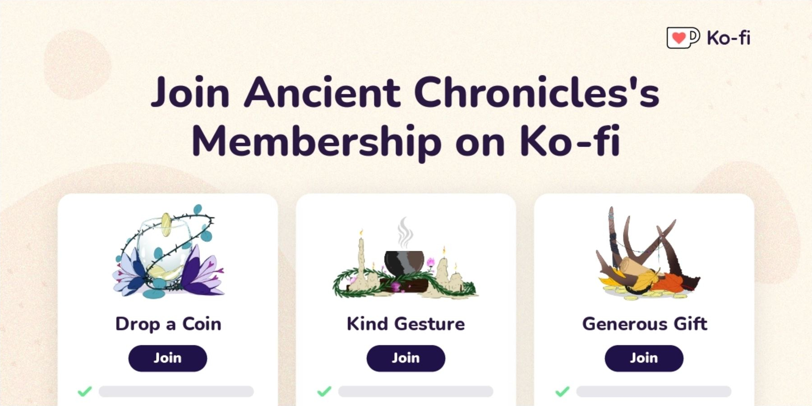

Two Creators...
Both grew up and live in Kansas. They met in 2007, shortly before the conception of the first inklings of what would later come to be known as Ancient Chronicles. Both compliment each other's developmental styles, and they work together seamlessly to continue the creation of the universe.

Kimberlea Heili
Kimberlea is a concept artist and creature designer. She loves to tell stories and spends her time daydreaming, researching, and bringing to life worlds and characters. One might also find her raiding an unsuspecting pantry.
Also Known As:
Kim, Creator of Chaos, Mama Whisper, Whisper Hail
Samuel Page
Samuel is an avid worldbuilder and storyteller. He's taken classes on photography and art, and spends many of his hours immersed in research in an effort to expand the believability of his work. He has a deep love for magpies, crows, ravens, and other corvids.
Also Known As:
Sam, Creator of Order, Papa Kaden, Kaden Daggs, Quil
Reach us at theancientchronicler@gmail.com
...One Massive Story
Legend has it that the universe was created by powerful beings known as Ancients. It's said that a dark evil had risen, but the Ancients sacrificed themselves to save what they had created. However, when the taint began to spread and horrific monsters began to emerge, everything everyone had ever known ceased to be. And now with a great darkness threatening to plunge the universe into ruinous chaos, any hope of restoring the peace has begun to fade ever farther away.
Ancient Chronicles is a sci fi fantasy webcomic epic about a progressive universe falling into chaos. The story is heavily molded by personal experience, the voices of many, and way too many nights spent researching weird things. Readers step into a beautifully imperfect world marred by corruption and discourse. Ancient Chronicles holds a heavy focus on world building, lore, inclusivity, and the perfect balance of science fiction and fantasy.
Keep the Story Going
Read and Share
Indulge in our universe and share it with your friends, family, and a random stranger! Word of mouth helps us grow our audience and support base. Oh and be sure to read up on the extra lore! There's a lot of good stuff on our world anvil page.
Join Our Community
Come join us in our discord server! We're a safe, inclusive space and there's always room for one more. We share our progress openly and all new sneak peeks, updates, and announcements are dropped in our server first. It's also our goal to make our content as accessible as possible. It's no fun when the good shit is trapped behind a paywall.
Donate
Let's get real for a moment. We're just two humans with full time jobs working on this project in our free time and the funding is coming out of our pockets. Our dream is to make this comic our full time job. But we can't do that without a little help. If you want to help us make our dream a reality, we accept one-time and monthly donations via Ko-Fi and humbly appreciate your support. We give fun rewards in return for your kindness.
Be sure to check out our shop!
